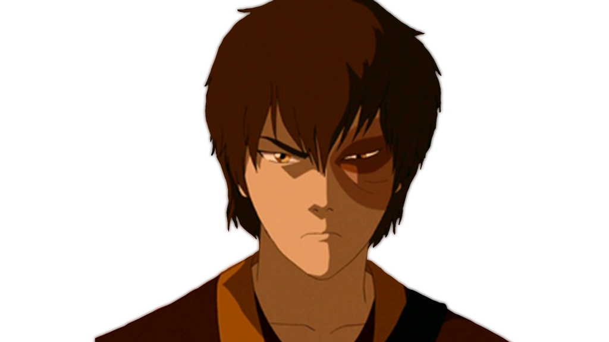

Zuko - The Power of Redemption

This is Zuko the firebender
"I used to think this scar marked me – the mark of the banished prince, cursed to chase the Avatar forever. But lately, I've realized I'm free to determine my own destiny, even if I'll never be free of my mark." — Zuko
- Act 1 Zuko born as price of the Fire Nation royal family. Banished from home is looking for the Avatar, to redeem his honor, allowing him to return home.
- Act 2 After failing to capture the Avatar, Zuko sinks even farther into despair. He struggles with recognizing the purpose of his life as he realizes he will probably not be able to return home.
- Act 3 Zuko wrestles with recognizing his own ideals/honor, he realizes that he must reject his father, Fire Lord Ozai (and therefore his father’s ideals). Zuko confronts his father, and chooses what he now knows to be honorable—to join the Avatar’s quest to restore balance to the world and defeat Fire Lord Ozai.
If you want to know more about this incredible character you can go to Wiki FANDOM